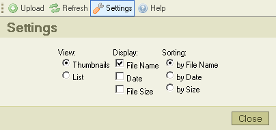

"Asetukset"-nappi ty繹kalurivill瓣 avaa "Asetusruudun", jossa voit konfiguroida ja muokata CKFinderia. T瓣ss瓣 kuvaruutukaappaus:

Kaikki asetukset tallennetaan hy繹dynt瓣en selaimen ev瓣steit瓣 (cookies). Ev瓣steet, "keksit", ovat pieni瓣 tiedostoja, jotka sis瓣lt瓣v瓣t k瓣ytt瓣j瓣kohtaisia konfigurointiasetuksia. Kullekin sivustolle on oma ev瓣steens瓣.
Napsauta "Sulje"-nappia tai "Asetukset"-nappia toistamiseen sulkeaksesi asetusruudun.
Kaikki konfigurointivalinnat liittyv瓣t tiedostoruutuun. Niit瓣 k瓣ytet瓣瓣n tietoruudun informaation esitt瓣mistavan valitaan. Tiedostoruutu reagoi v瓣litt繹m瓣sti asetusmuutoksiin.
Hallinnoi n瓣kym瓣tyypin valintaa tiedostoruudussa:
Asettaa n瓣ytett瓣v瓣n informaation m瓣瓣r瓣n tiedostoruudulle. Esimerkkin瓣 n瓣ytet瓣瓣n alla vaihtoehdot eri informaatiom瓣瓣r瓣valinnoilla:
|
|
|
|
|
Asettaa j瓣rjestyksen, jossa tiedostot n瓣ytet瓣瓣n: aakkosj瓣rjestyksess瓣 tiedostonimien perusteella, tiedoston luontip瓣iv瓣m瓣瓣r瓣n mukaan (uusimmat ensin) tai tiedostokoon mukaisesti.